What Does Digital Transformation Look Like?
Overview
Who needs this information?
Articles in this section provide high-level overviews and checklists to aid X adoption and implementation. This information is most relevant to Digital Transformation Leads, IT Leads, Site Leads, and X Champions.
X’s Digital Maturity Model assesses progress toward Digital Transformation across four key dimensions:
- Governance
- Digital Maturity
- Productivity Gain
- Capabilities and Skills
At X, we differentiate between simply digitizing processes and true digital transformation. Converting a single paper-based process into a digital format can reduce errors, enable quicker access to information, and lead to cost savings, but this approach does not fundamentally change how your organization operates, meaning productivity gains are limited. The underlying processes remain the same, except they are executed digitally using software or an app.
Digital transformation, on the other hand, is a comprehensive overhaul that requires cultural and structural changes to fully leverage digital technologies. It involves rethinking the way you approach solutions to maximize productivity and efficiency. Building and maturing organizational programs and methodologies for adopting, governing, and growing the X platform is key. By taking full control of X, you can achieve transformation across all facets of your operations, moving beyond simple improvements to realize significant, long-term gains.
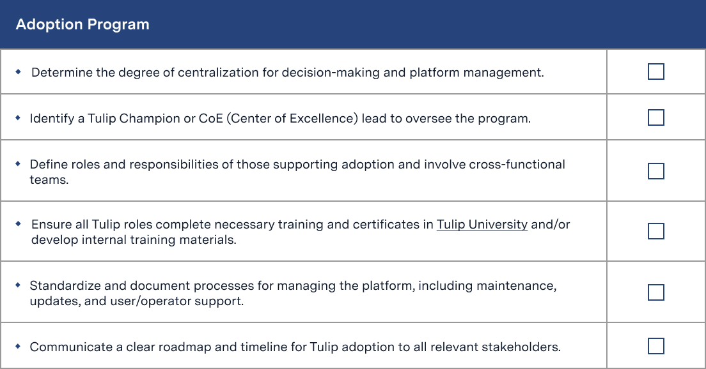
X’s maturity scoring scale assesses your organization’s current state within each dimension. By adding up your scores across each dimension, you can estimate your organization’s progress toward Digital Transformation.
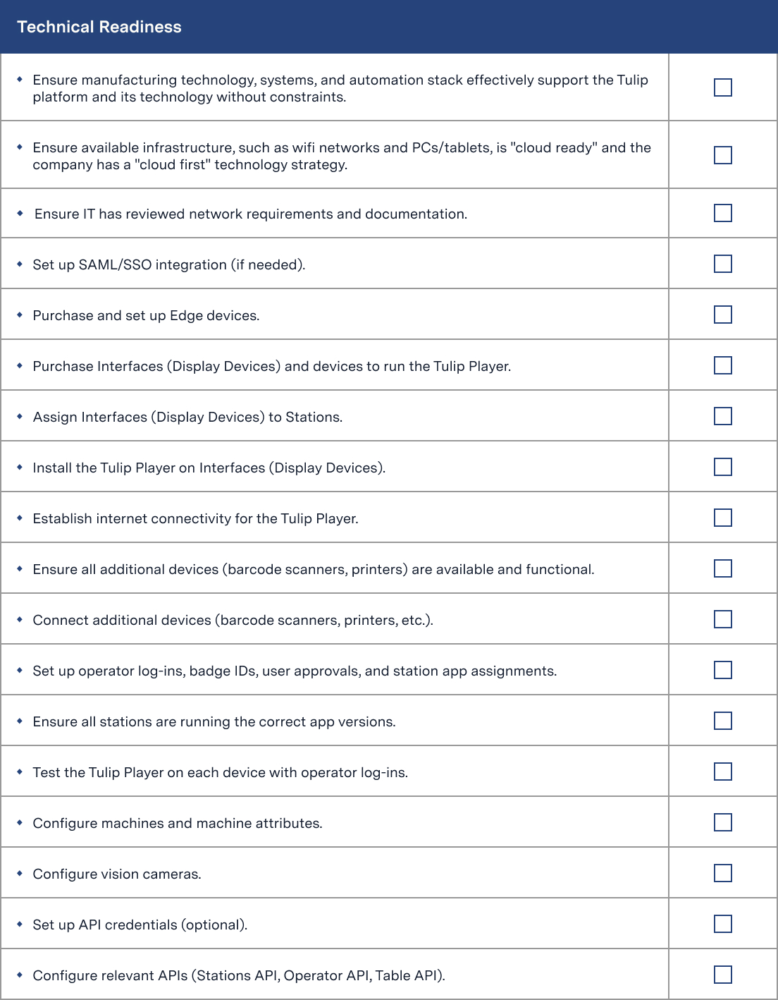
Digital Maturity Checklists
Note
These checklists are guidelines and may or may not apply to your organization. The intent is to help identify strengths and weaknesses when it comes to being ready to adopt and scale X.
How to use the checklists
Preview the checklists below.
- Download the checklists on X University.
- Make a copy of the Sheets to use the scorecard (Optional).
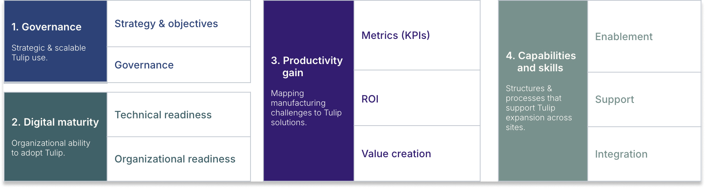
Governance
Overview
Your organization needs a well-defined strategy for managing the X platform within your digital tool belt. This strategy should be part of a comprehensive plan that prioritizes business needs and identifies the digital technologies and tools required to address those needs. Good governance ensures personnel are adopting and using X in a way that meets your goals and follows any regulatory requirements.
To achieve this, you'll need to establish clear policies and procedures that guide the use, maintenance, and development of the platform. This includes defining roles and responsibilities, setting up user access and permissions, and ensuring data integrity. Unauthorized or untrained users may make changes that go live immediately without understanding the potential consequences. This can lead to data corruption or errors, such as deletion of table records, running the wrong version of an app, or testing an app incorrectly and logging false data. Governance policies should also encompass change management processes to facilitate smooth transitions as new digital tools and technologies are introduced.
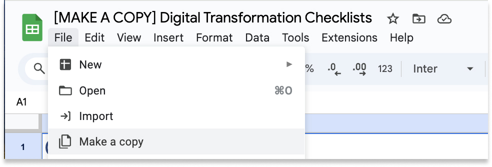
Your plan should include:
- Strategy and Objectives: Strategic goals and objectives that align with your organization’s business needs and roadmap for how X will contribute to achieving these objectives.
- Adoption Program: A structured program that promotes the adoption of X across your organization, including training and support.
- Program Management: Methodologies for executing on programs (e.g. processes for prioritizing use cases and planning roadmaps, executing projects, and tracking progress and value gain.)
- Platform and Content Governance: Governance policies that dictate how the platform is managed by Account Owners and Admins, and clear guidelines for content creation, management, and change management.
Strategy and Objectives
Digital Transformation plans should include strategic goals and objectives that align with your organization’s business needs. You should consider the following as part of your strategy:
- Vision for Change: Clear vision for how digital transformation will benefit the organization and what success looks like.
- Execution Strategy: Strategies for system integration and process harmonization.
- Resourcing Model: Model that identifies the necessary resources, including personnel, technology, and budget.
- Organization Structure Alignment: Org structure that is flexible and supports the strategic goals and facilitates change. This includes having designated roles and responsibilities for managing the platform, building apps, fostering a culture of continuous improvement, and ensuring communication and collaboration across departments.
- Culture and Mindsets: Culture that embraces digital transformation and is open to new technologies. X is not something that can be set up once and ignored, productivity gains are achieved through a culture of continuous improvement.
- X Roadmap: Use case roadmap and a plan for strategically expanding apps and solutions to increase productivity.
- Business metrics and KPIs: Metrics that guide, manage and govern digital transformation.
Checklist
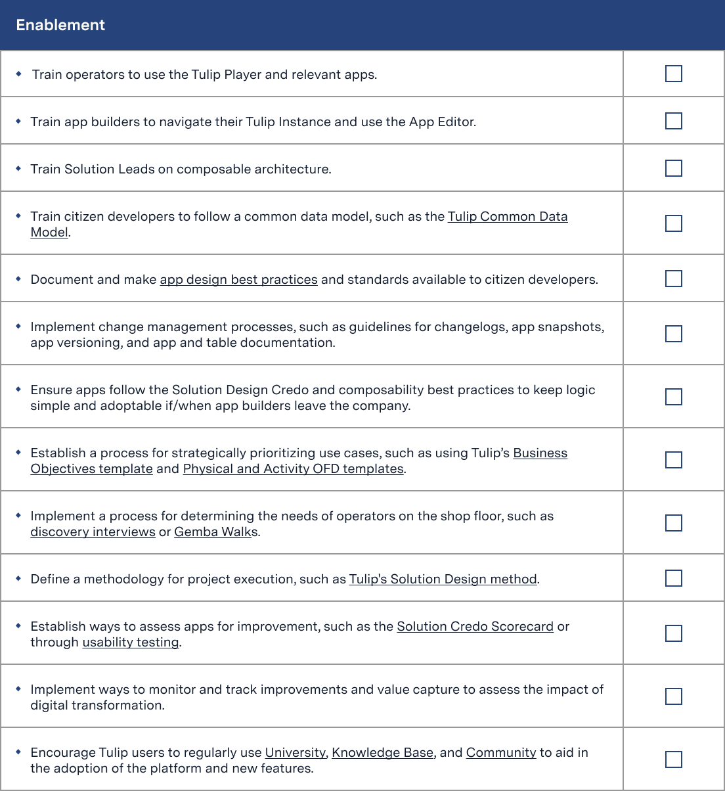
Adoption Program
Adoption Programs define and document processes and procedures to integrate the X platform into daily business operations. Key steps for building an adoption program include:
- Set Degree of Centralization: Determine the level of centralization for decision-making and platform management. For Enterprise organizations, X recommends a Center of Excellence (CoE) team own the adoption program with a standardized reporting structure or method of communication between sites. Each site should have its own X champion.
- Define Roles and Responsibilities: Clearly outline the roles and responsibilities of all stakeholders involved in the adoption process.
- Set Up an Internal Training Program: Create a training program to educate employees on using the X platform effectively. You should leverage X’s self-serve education content and certificates in X University.
- Create IT and Operations Communication Channels: Successful X apps are developed by engineers closest to the operations. IT should not own app development and there must be clear communication channels between IT and Operations to facilitate collaboration and support.
- Standardize Processes to Manage the Platform: Develop processes to manage the platform, including maintenance, updates, and user/operator support.
Example of how an Adoption Program can grow over time
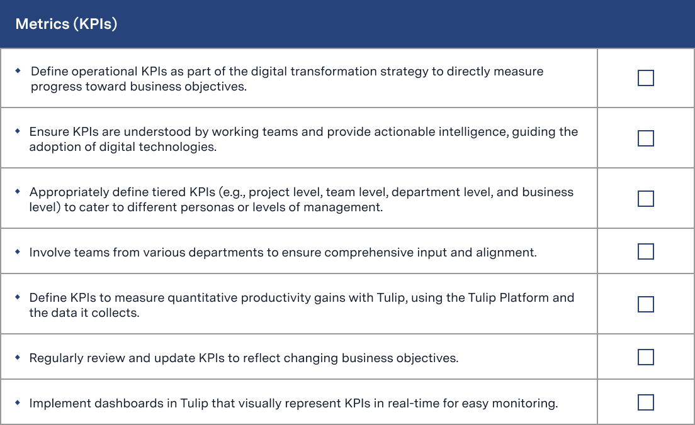
Checklist
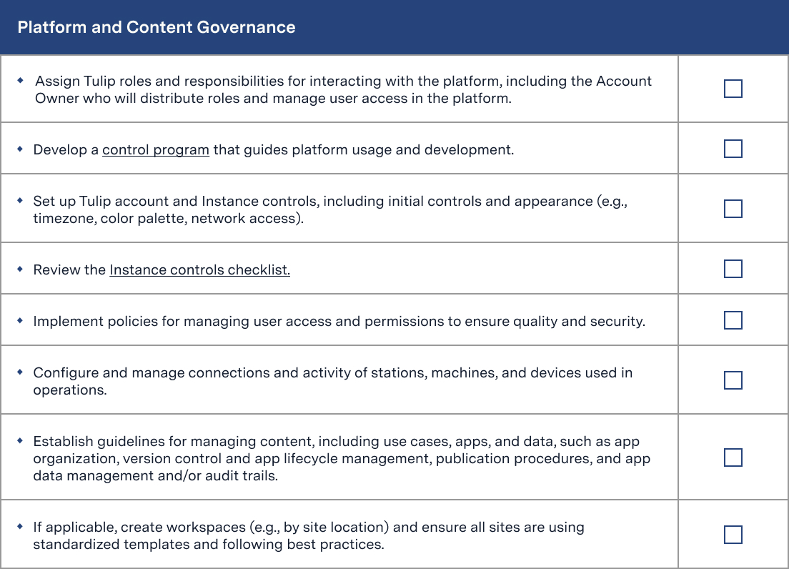
Platform and Content Governance
As you expand with X and grow your use cases or operations across multiple sites, it will be necessary to define roles and responsibilities and standardize processes for managing and maintaining your platform. Without standardized procedures and controlled access, managing an increasing number of users, apps, and data sources can become overwhelming. Consider the following:
- Platform Strategy: Create a control program that guides platform usage and development.
- Account Setup: Set initial controls and appearance of your X Instance (e.g. timezone, color palette, network access).
- User Management: Develop policies for managing user access and user permissions to ensure quality and security.
- Content Management: Establish guidelines for managing content, including use cases, apps, and data. This includes both content and data organization as well as strategies that enable change management, such as app review and approval workflows, app versioning and changelogs, standardization of app templates, custom widgets, and connectors, etc.
- Shop Floor Management: Set up and manage the connection and activity of stations, machines, and devices used in operations.
- Workspace Management (Enterprise and above): Customize workspace settings and ensure sites are using standardized templates and following best practices.
Learn more about platform management and see a complete checklist of account controls here.
Checklist
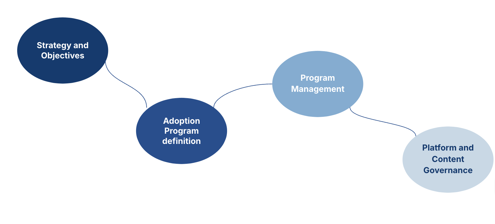
Digital Maturity
Overview
Digital Maturity measures how ready your organization is on a cultural, structural, and technical level to adopt and implement a digital tool like X. Being successful with X means adopting ongoing iteration and support in order to increase productivity gains. This might mean making structural changes within your organization, such as adjusting roles and responsibilities, fostering a culture of continuous improvement, and ensuring your technical infrastructure can support ongoing development.
Organizational Readiness
Our organizational readiness checklists assess cultural mindset and structural alignment. Are your operators ready and willing to adopt new technologies? Can current personnel fit X into their permanent responsibilities?
The key concepts your organization should adopt in order to be successful with X are:
- Bottom-up approach: Operational issues and their required solutions are determined on the floor with collaboration from engineers and operators. Higher-level strategies are formed to support these operations.
- Democratization: It is critical that solutions are developed by engineers on the floor. Process engineers know the most about the operators and the process, so they can tailor apps to their specific needs. They can also develop and change apps faster themselves, rather than waiting on an IT request.
- Composability: Apps must be developed specifically for the operator and their process. Apps that are centrally or mass-produced are generic and will not fit each operation.
- Continuous Improvement: X is a permanent addition to the daily responsibilities of personnel. Exponential productivity gains are only achieved through improving apps and processes through iteration.
Checklist
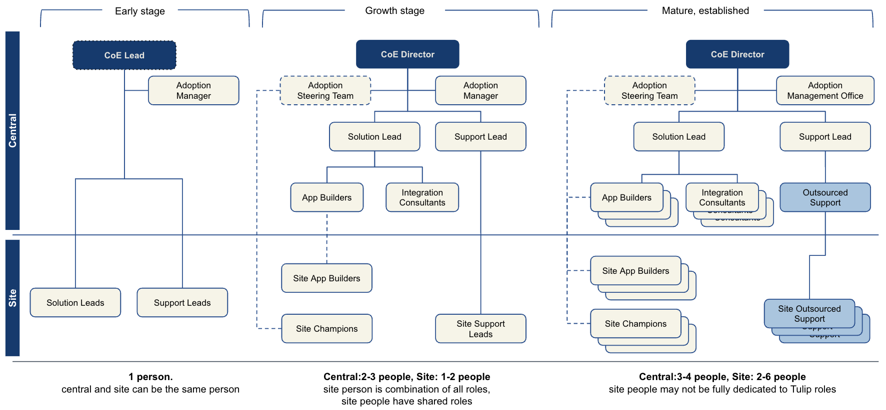
Technical Readiness
Technical readiness takes a look at your organization’s technical capabilities and whether or not you have the infrastructure in place to deploy X. This includes evaluating your current IT infrastructure to ensure it can support the X platform, such as having reliable internet connectivity, sufficient hardware like PCs, tablets, and Edge devices, and necessary peripheral devices like barcode scanners and printers. Additionally, it involves assessing whether your systems are "cloud-ready" and if your organization has a "cloud-first" technology strategy. Depending on your organization size and requirements, you may also need to establish network security protocols and set up SAML integration to manage user authentication and authorization.
Checklist
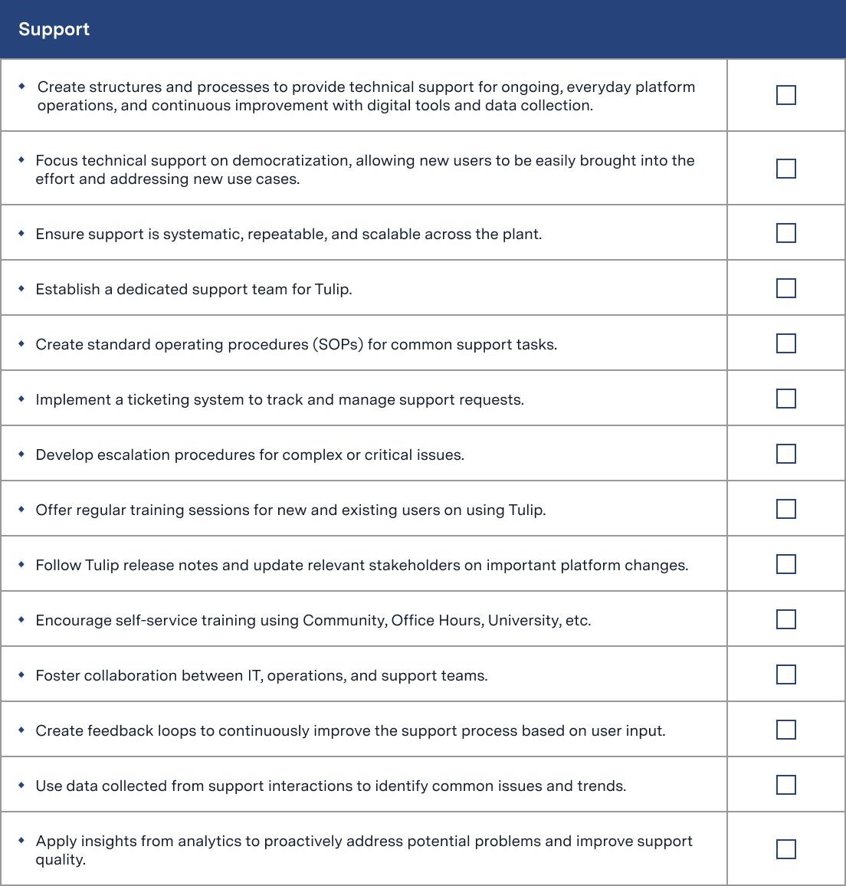
Productivity Gain
Overview
In this section, we’re looking at whether or not an organization has a financial framework that proves a digital solution is adding value and defines measurements it cares about.
Your company/site should have a methodology to calculate or derive ROI from your technology investments. You should be able to quantify performance outcomes from your investments on a continuous basis by regularly monitoring technology assets and investments, using mainly X (but possibly some external systems or tools) to provide visibility to ROI.
These processes and tools should involve cross-functional teams and operations to continuously measure value creation, or ROI, from X. Practical units may be currency or something else, like hours, shifts, or volumes. For example, a direct shop floor metric might be cycle time, and the value to your company could be measured as an increase in volume produced (direct revenue impact) and/or reduction in labor hours (cost impact).
Metrics (KPIs)
Operational KPIs are necessary for measuring progress towards business objectives and guiding the adoption of digital technologies. These KPIs should be understood by all team members and defined at various levels, such as project, team, department, and business. Regularly review and update these KPIs to ensure they reflect current business goals, and use X’s dashboards to monitor them in real-time for actionable insights and productivity gains.
Take a look at our Business Objectives template to pinpoint operational pain points, prioritize goals, and set measurable KPIs.
Checklist
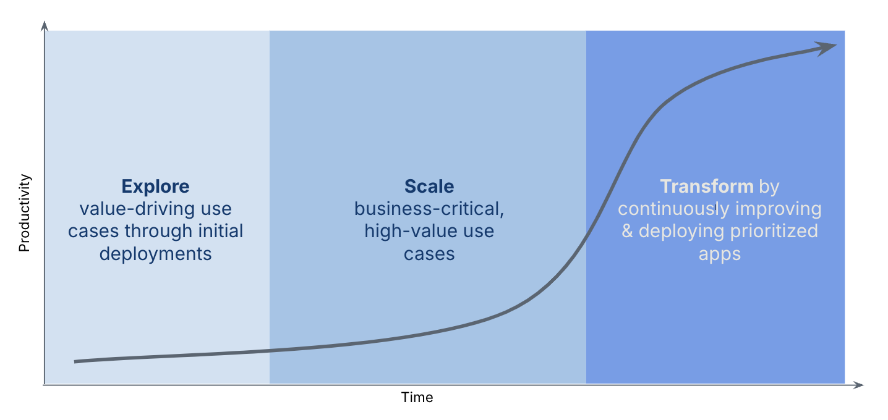
ROI
Our ROI checklist checks whether your organization or site has a methodology to calculate or derive ROI from technology investments. Are you using digital tools–specifically X–to provide visibility to ROI, and are using that data to make strategic decisions around expansions and roadmaps?
Tools and processes for calculating ROI should involve cross-functional teams and Operations to quantify performance outcomes from investments and value creation on a continuous basis. Practically, units may be currency or something else e.g., hours, shifts, volumes. For example, a direct shop floor metric may be cycle time, and the value to the company is measured as an increase in volume produced (direct revenue impact) and/or reduction in labor hours (cost impact).
Checklist
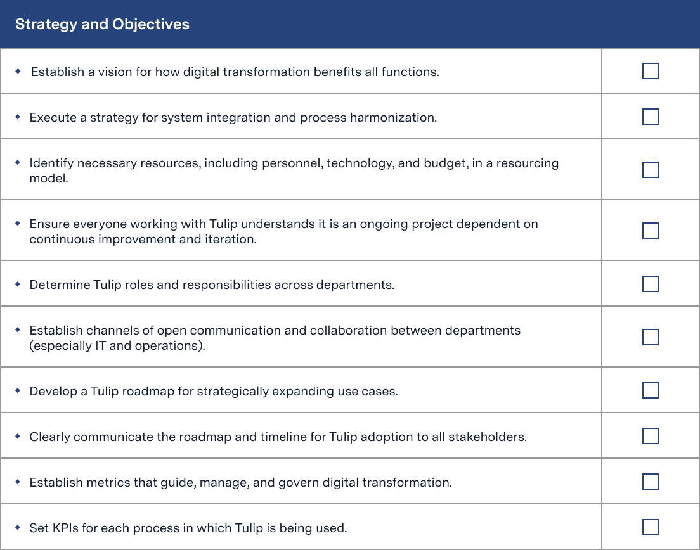
Value Creation
Organizations with mature value creation use the X Platform and other digital technologies to increase productivity and respond to operational challenges. They have a clear understanding of how to measure operational improvements and what data is required to provide effective measures for the improvement.
For example, your X solutioning process (the process of defining use cases and designing solutions) might include a definition of the data the solutions should collect and output to show value. You should have defined processes and evidence for how X, as digital technology, can be used to create value. You might have established methods using DMAIC, 6-sigma, etc. to associate improvement in shop floor productivity measures to value for the company.
Checklist
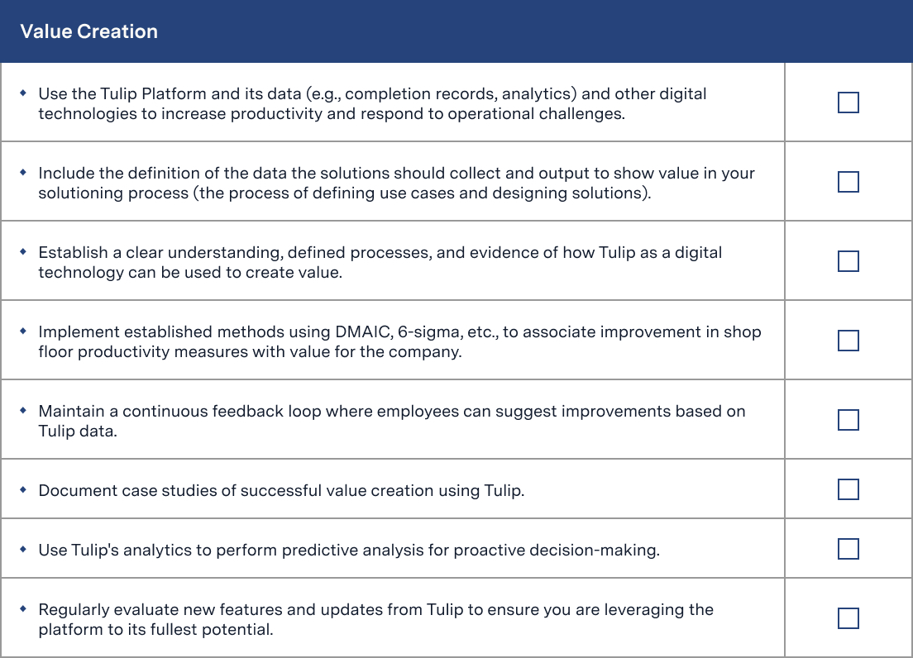
Capabilities and Skills
Overview
The capabilities and skills dimension focuses on the organizational structures that are put in place to execute on governance. This section is about enabling tactical implementation of X. Key components include:
- Tactical Prioritization and Planning: Standardize how use cases are prioritized. You can use X’s Business Objectives template to determine metrics and create Physical and Activity OFDs to plan out solutions. Conduct discovery interviews with operators to identify user needs.
- Project Execution: Define a methodology for project development, such as our Solution Design method. Apps should follow defined architectural and design best practices such as X’s Solution Credo and Design Best Practices.
- Value Capture/Improvement Tracking: Monitor and track improvements and value capture to assess the impact of digital transformation. (e.g. Apps can be evaluated by conducting usability testing with operators and scored with the X Solution Credo Scorecard.)
This dimension also assesses your organization’s capability to adopt and implement new technologies in an effective manner, such as:
- Having processes that enable both adoption of the X platform and citizen development
- Having change management processes and capabilities
- Technical capabilities
- Enablement support and training to support and manage the adoption of X
Enablement
Enablement focuses on executing governance strategy and enabling the actual people and teams working on X. There should be processes and procedures in place that drive the adoption of the X platform, as well as structures and methods for integrating the platform into your organization's operations.
Checklist
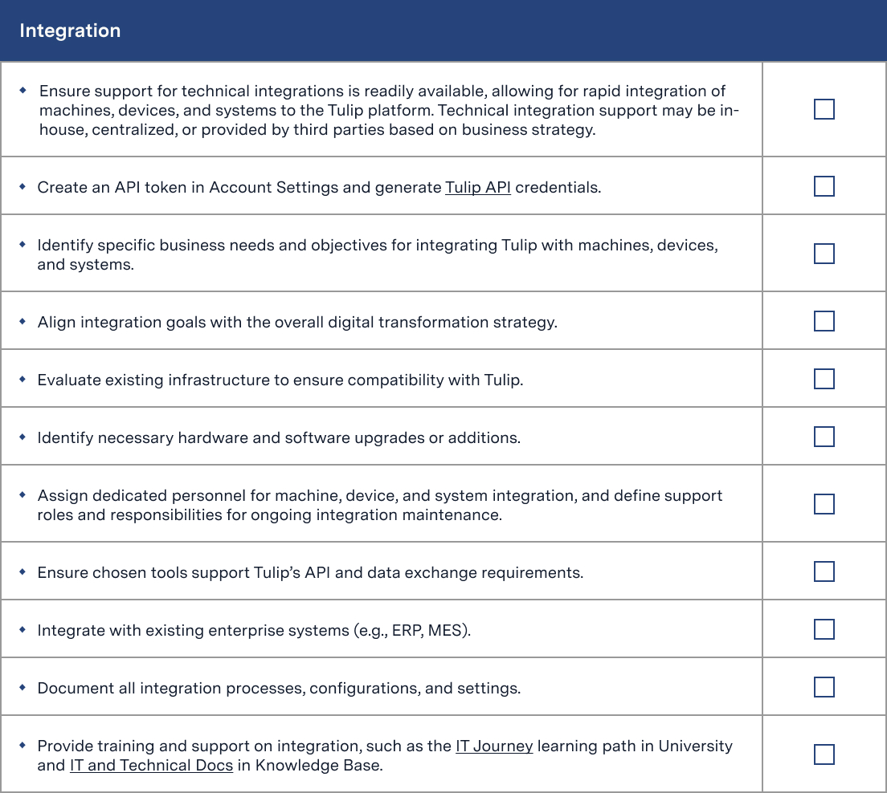
Support
Technical support looks at whether structures and processes exist to provide technical support for ongoing, everyday platform operations, and continuous improvement with digital tools and data collection. This dimension focuses on democratization and how easily new users can be onboarded and new use cases can be addressed. Support processes should be systematic and repeatable, and scalable.
Checklist
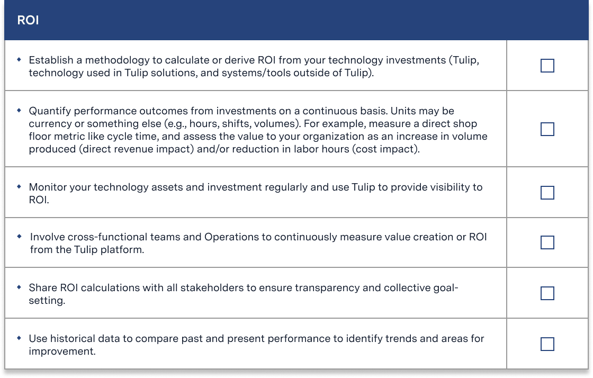
Integration
Support for technical integrations should be readily available, allowing for rapid integration of machines, devices, and systems to the X platform, so they may be used in solutions. Technical integration support may be in-house, centralized, or provided by 3rd parties based on business strategy.
Checklist
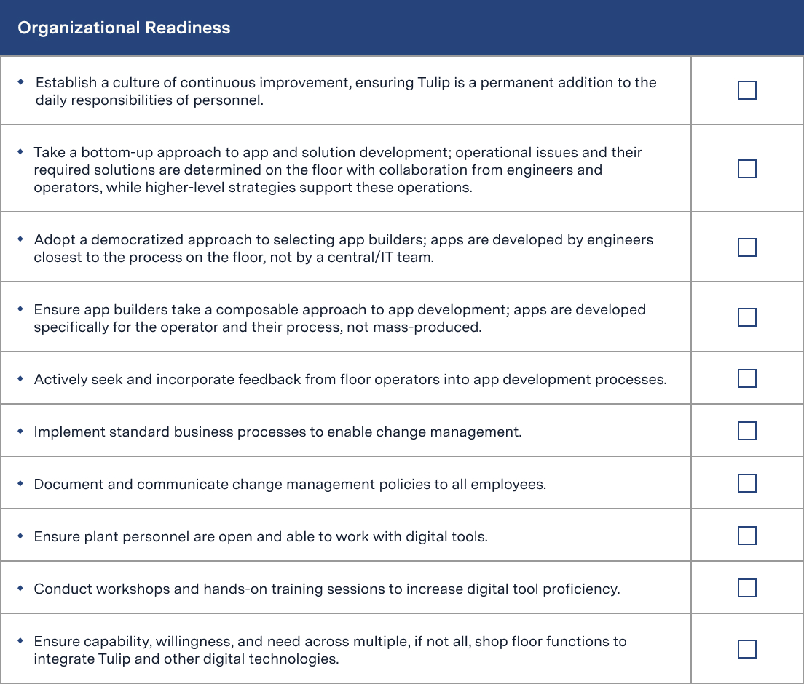